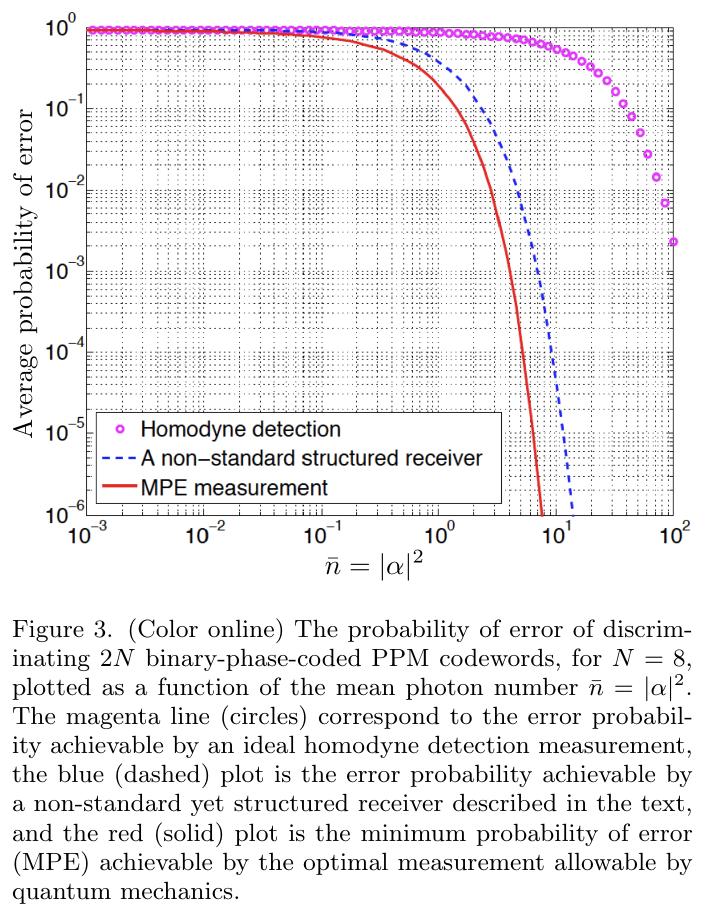
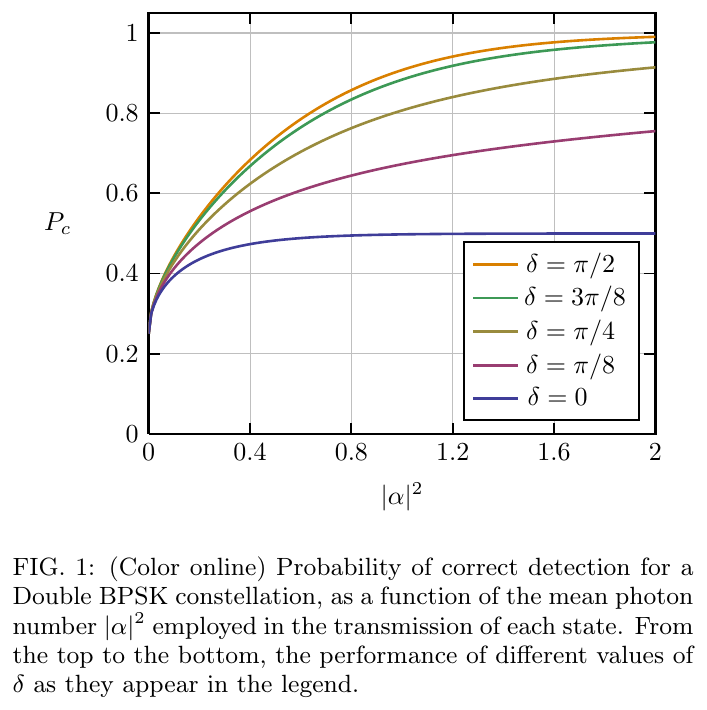
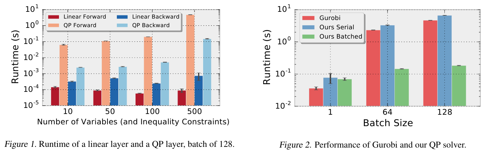
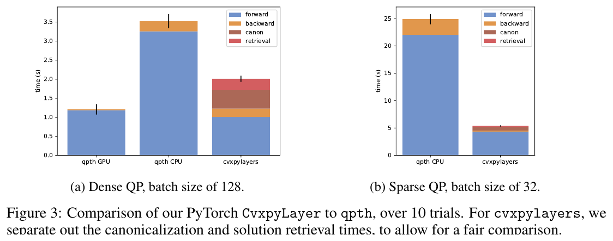
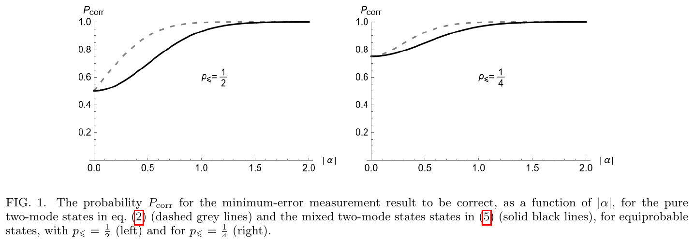
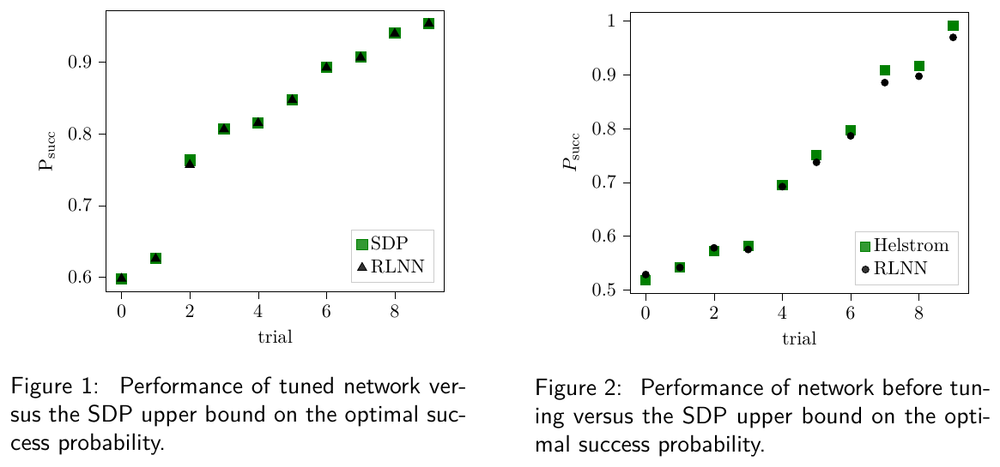
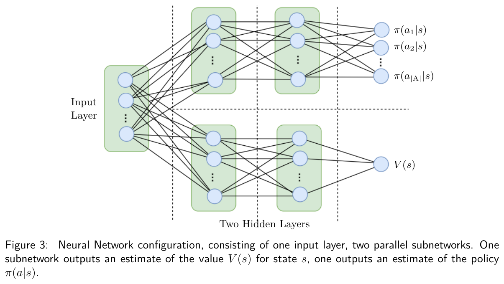
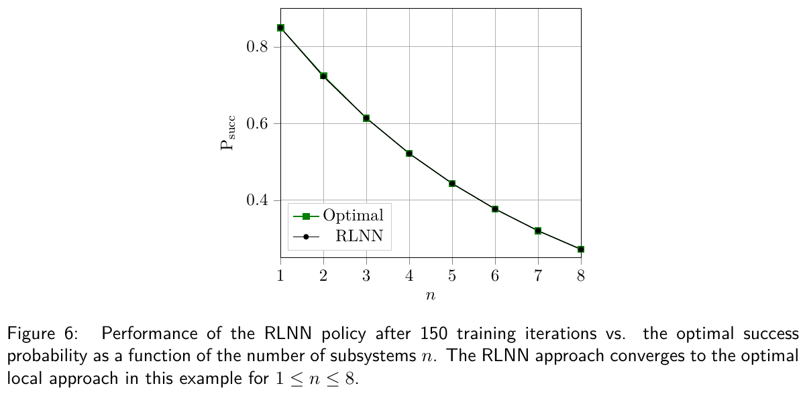
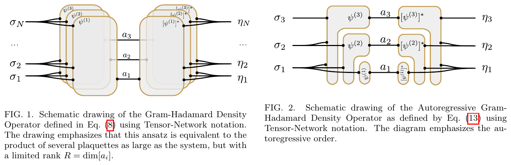

Module 15 · Literature for the surrogate: differentiable optimisation and state learning
PGM, alpha-PGM, differentiable layers and learned measurements
- Compute the \(\alpha\)-PGM success probability from Eq. (37)
- Tell when PGM is optimal and when it is not
- State the limits of OptNet and cvxpylayers for SDPs
- Check scope before quoting a theorem
📚 Source documents of this module (each file checked against its actual content)
| File in the archive | Paper (verified against its content) | Pages | Status | Link | Used in this module |
|---|---|---|---|---|---|
| new_search/Zhou2025_DistinguishabilityGeometricallyUniformStates.pdf | On the distinguishability of geometrically uniform quantum states J. Zhou, S. Chessa, E. Chitambar, F. Leditzky · 2025 · J. Phys. A 58, 415303 (arXiv:2501.12376v2) | 24 | Partly read (long book) | DOI · arXiv | Abstract, Sec. 1.1, Sec. 4 (Props. 8, 9, Eqs. 24 to 37; pp. 4, 8, 9), Sec. 5.3 (p. 11) |
| new_search/Krovi2015_OptimalMeasurementsSymmetricStates.pdf | Optimal Measurements for Symmetric Quantum States with Applications to Optical Communication H. Krovi, S. Guha, Z. Dutton, M. P. da Silva · 2015 · Phys. Rev. A 92, 062333 (arXiv:1507.04737) | 11 | Partly read (long book) | DOI · arXiv | Fig. 3 and Eqs. (19), (20), p. 7 read |
| new_search/DallaPozza2015_OptimalitySquareRootMeasurements.pdf | On the Optimality of Square Root Measurements in Quantum State Discrimination N. Dalla Pozza, G. Pierobon · 2015 · Phys. Rev. A 91, 042334 (arXiv:1504.04908) | 11 | Partly read (long book) | DOI · arXiv | Abstract, Double BPSK section and Fig. 1 (p. 6) read |
| new_search/Petrongonas2024_OptimalDiscriminationMixedSymmetricCoherent.pdf | Optimal Discrimination of Mixed Symmetric Multi-mode Coherent States I. Petrongonas, E. Andersson · 2024 · arXiv:2410.11632 | 24 | Partly read (long book) | arXiv | Fig. 1, Eqs. (18) to (21) and (34) read (pp. 4 and 7) |
| new_search/AmosKolter2017_OptNet.pdf | OptNet: Differentiable Optimization as a Layer in Neural Networks B. Amos, J. Z. Kolter · 2017 · ICML 2017 (arXiv:1703.00443v5) | 13 | Partly read (long book) | arXiv | Sec. 3.3 (p. 5), Sec. 4.1 and Figs. 1, 2 (p. 6) read |
| new_search/Agrawal2019_DifferentiableConvexOptimizationLayers.pdf | Differentiable Convex Optimization Layers A. Agrawal, B. Amos, S. Barratt, S. Boyd, S. Diamond, J. Z. Kolter · 2019 · NeurIPS 2019 (arXiv:1910.12430v1) | 19 | Partly read (long book) | arXiv | Abstract, Secs. 1 to 4 (ASA), Table 1 and Fig. 3 (pp. 2, 8, 9) read |
| new_search/Agrawal2024_DifferentiableConvexOptLayersReview.pdf | Differentiable Convex Optimization Layers in Neural Architectures: Foundations and Perspectives C. K. Katyal · 2024 · arXiv:2412.20679v1 | 17 | Partly read (long book) | arXiv | Abstract and Sec. 1 read. File name says Agrawal but the author is Katyal |
| new_search/Brandsen2022_arXivVersion_RLMultipleHypothesis.pdf | Reinforcement Learning with Neural Networks for Quantum Multiple Hypothesis Testing S. Brandsen, K. D. Stubbs, H. D. Pfister · 2022 · Quantum 6, 633 (arXiv:2010.08588v3) | 23 | Partly read (long book) | DOI · arXiv | Abstract, Figs. 1 to 3 (p. 5), Fig. 6 (p. 7) read |
| reused_from_paper1/Brandsen2022_ReinforcementLearningMultipleHypothesisTesting.pdf | (nội dung thật) Proposal for room-temperature quantum repeaters with nitrogen-vacancy centers and optomechanics J.-W. Ji, Y.-F. Wu, S. C. Wein, F. Kimiaee Asadi, R. Ghobadi, C. Simon · 2023 · arXiv:2203.06611v3 | 22 | Wrong file: content does not match the title | File name says Brandsen but the content is an NV quantum-repeater paper; nothing quoted. The new_search arXiv copy is used | |
| reused_from_paper1/Koutny2022_GHDODensityParametrization.pdf | Positive-definite parametrization of mixed quantum states with deep neural networks F. Vicentini, R. Rossi, G. Carleo · 2022 · arXiv:2206.13488v1 | 9 | Partly read (long book) | arXiv | File name says Koutny but the authors are Vicentini et al. Abstract, Eqs. (7), (8), Figs. 1, 2 (p. 3) read |
| reused_from_paper1/DiAdamo2022_RLCalibrationCoherentReceivers.pdf | Reinforcement-learning calibration of coherent-state receivers on variable-loss optical channels M. Bilkis, M. Rosati, J. Calsamiglia · 2022 · arXiv:2203.09807v1 | 7 | Partly read (long book) | DOI · arXiv | File name says DiAdamo but the authors are Bilkis et al. Abstract read |
| new_search/Nguyen2024_EquivariantQuantumNeuralNetworks.pdf | Theory for Equivariant Quantum Neural Networks Q. T. Nguyen, L. Schatzki, P. Braccia, M. Ragone, P. J. Coles, F. Sauvage, M. Larocca, M. Cerezo · 2024 · PRX Quantum 5, 020328 (arXiv:2210.08566v2) | 47 | Partly read (long book) | DOI · arXiv | Abstract and Fig. 1 (p. 2) read |
| new_search/Muller2012_QPSKHybridReceiver.pdf | QPSK coherent state discrimination via a hybrid receiver C. R. Müller, M. A. Usuga, C. Wittmann, M. Takeoka, Ch. Marquardt, U. L. Andersen, G. Leuchs · 2012 · New J. Phys. 14, 083009 (arXiv:1204.0888v2) | 13 | Partly read (long book) | arXiv | Abstract read |
| new_search/DiMario2019_BinaryCoherentStatesPhaseNoise.pdf | Optimized communication strategies with binary coherent states over phase noise channels M. T. DiMario, L. Kunz, K. Banaszek, F. E. Becerra · 2019 · npj Quantum Information 5, 65 (arXiv:1907.12515) | 13 | Partly read (long book) | DOI · arXiv | Abstract read |
| new_search/Jabir2022_EnergyBandwidthEfficiencyOptimization.pdf | Energy and bandwidth efficiency optimization of quantum-enabled optical communication channels M. V. Jabir, N. F. R. Annafianto, I. A. Burenkov, A. Battou, S. V. Polyakov · 2022 · npj Quantum Information 8, 63 | 7 | Partly read (long book) | DOI | Abstract read |
| reused_from_paper1/Warke2024_PhotonicHelstromReceiver.pdf | Photonic Quantum Receiver Attaining the Helstrom Bound A. Warke, J. Nötzel, K. Takase, W. Asavanant, H. Nagayoshi, K. Fukui, S. Takeda, A. Furusawa, P. van Loock · 2024 · arXiv:2410.21800v1 | 8 | Partly read (long book) | arXiv | Abstract read |
| reused_from_paper1/Walsh2025_AllGaussianHelstromBound.pdf | All-Gaussian State Discrimination Beyond the Coherent Helstrom Bound A. Walsh, L. O. Conlon, B. Shajilal, Ö. Erkılıç, J. Janousek, S. M. Assad, J. Zhao, P. K. Lam · 2025 · arXiv:2510.20096v2 | 10 | Partly read (long book) | arXiv | Abstract read |
| reused_from_paper1/Khan2024_NeuralProcessingQSD.pdf | A neural processing approach to quantum state discrimination S. A. Khan, F. Hu, G. Angelatos, M. Hatridge, H. E. Türeci · 2024 · arXiv:2409.03748v3 | 64 | Partly read (long book) | arXiv | Long paper (64 pages): abstract only |
| reused_from_paper1/Hwang2024_HelstromMeasurementSimulation.pdf | Quantum-inspired classification via efficient simulation of Helstrom measurement W. Hwang, D. K. Park, I. F. Araujo, C. Blank · 2024 · arXiv:2403.15308v1 | 12 | Partly read (long book) | arXiv | Abstract read |
| reused_from_paper1/Weedbrook2012_GaussianQuantumInformation.pdf | Gaussian Quantum Information C. Weedbrook, S. Pirandola, R. García-Patrón, N. J. Cerf, T. C. Ralph, J. H. Shapiro, S. Lloyd · 2012 · Rev. Mod. Phys. 84, 621 (arXiv:1110.3234) | 51 | Partly read (long book) | DOI · arXiv | 51-page review: abstract only |
| reused_from_paper1/VandenbergheBoyd1996_SemidefiniteProgramming.pdf | Semidefinite Programming L. Vandenberghe, S. Boyd · 1996 · SIAM Review 38(1), 49-95 | 47 | Partly read (long book) | DOI | Read in module 14 (SDP cost) |
Lecture (slides)
Use the ← → keys or the buttons; ⛶ opens full-screen presentation.
The M-ary Helstrom problem that needs a surrogate
- \(\rho_i\)received state for symbol \(i\) (density matrix)
- \(\Pi_i\)POVM
- \(p_i\)prior probability
For \(M=2\) with equal priors the closed answer is \(P_e=\tfrac12\bigl(1-\tfrac12\|\rho_1-\rho_0\|_1\bigr)\). For \(M\gt2\) there is no general closed form, so one solves an SDP or uses an approximate measurement.
The pretty good measurement as a fast evaluation layer
- \(\rho\)average state; inverse taken on the support
- \(\Pi_i^{\text{PGM}}\)measurement computed directly from \(\rho_i,p_i\), no solver
PGM needs one eigendecomposition of \(\rho\) and a few matrix products, an \(O(d^3)\) cost per sample. Two groups of results in the literature tell when PGM is optimal and when it is not.
Zhou, Chessa, Chitambar, Leditzky, On the distinguishability of geometrically uniform quantum states, J. Phys. A 58, 415303 (2025), Eq. (3), p. 4.
Geometrically uniform ensembles
- \(G\)finite group acting irreducibly on a \(d\)-dimensional space
- \(\lambda_{\max}(\rho)\)largest eigenvalue of the generator state \(\rho\)
A GU example: \(M\) coherent states \(|\alpha e^{2\pi ik/M}\rangle\) generated by the cyclic group \(\mathbb Z_M\). Holevo’s formula for \(p^*_{\text{succ}}\) needs only \(\lambda_{\max}\), not an SDP.
Zhou, Chessa, Chitambar, Leditzky, On the distinguishability of geometrically uniform quantum states, J. Phys. A 58, 415303 (2025), Eq. (24), (25), p. 8.
PGM optimal for symmetric pure ensembles

Nguồn: Krovi, Guha, Dutton, da Silva, Phys. Rev. A 92, 062333 (2015), Fig. 3 (p. 7)
- \(s_k\)four linear combinations of \(e_1,e_2,e_3\) in Eq. (20)
- \(e_1\)\(e^{-|\alpha|^2}\)
Every result of the paper uses pure states.
Necessary and sufficient conditions for SRM optimality

Nguồn: Dalla Pozza, Pierobon, Phys. Rev. A 91, 042334 (2015), Fig. 1 (p. 6)
- \(\eta\)\(e^{-2\alpha^2}\)
- \(\chi,\xi\)\(e^{-\alpha^2(1-e^{i\delta})},\ e^{-\alpha^2(1+e^{i\delta})}\)
SRM is optimal if and only if \(G^{1/2}\) is block diagonal and each block has equal diagonal entries.
Timeline: from SDP to PGM theory for mixed states
The family of \(\alpha\)-power-PGM measurements
- \(\alpha=1\)PGM
- \(\alpha=2\)quadratically weighted measurement
- \(\alpha\to\infty\)approaches the optimal measurement for irreducible representations
The exponent \(\alpha\) is a continuous knob between the cheap PGM and the optimal measurement. The cost is still a matrix power and an inverse square root, with the same differentiable structure as PGM.
Zhou, Chessa, Chitambar, Leditzky, On the distinguishability of geometrically uniform quantum states, J. Phys. A 58, 415303 (2025), Eq. (4), p. 4.
The closed form of success probability in alpha
- \(d,n\)space dimension, group order
- \(\rho\)generator state, possibly mixed
- Eq. (35): by irreducibility \(\tilde\rho\) is proportional to the identity, so \(\tilde\rho^{-1/2}\) is just a scalar.
- Eq. (36): substitute and use Eq. (24) once more.
- Eq. (37): what remains is a ratio of two traces, readable from the spectrum of \(\rho\).
Zhou, Chessa, Chitambar, Leditzky, On the distinguishability of geometrically uniform quantum states, J. Phys. A 58, 415303 (2025), Eq. (35) to (37), p. 9.
PGM is suboptimal when the generator is mixed
- \(\lambda_k\)eigenvalues of \(\rho\)
- \(p_{\text{succ}}(\alpha)\lt p^*_{\text{succ}}\)for every finite \(\alpha\) when \(\rho\) is mixed
| Generator | \(\mathrm{tr}\rho^{\alpha+1}/\mathrm{tr}\rho^{\alpha}\) | Conclusion |
|---|---|---|
| Pure (\(\rho^2=\rho\)) | \(1\) | PGM (\(\alpha=1\)) is already optimal |
| Mixed | \(\lt\lambda_{\max}\) | PGM provably suboptimal |
OptNet: a differentiable optimisation layer for QPs

Nguồn: Amos, Kolter, OptNet, ICML 2017 (arXiv:1703.00443v5), Fig. 1 and 2 (p. 6)
- \(z^\star\)output of the layer
- \((Q,q,A,b,G,h)\)learnable parameters
Backward goes through the KKT conditions by implicit differentiation, reusing the KKT factorisation from the forward pass. A batch of 128 QPs: 0.18 s versus 4.7 s for Gurobi (p. 6). Practical limit: below about 1000 dimensions (p. 5).
cvxpylayers: general convex layers, SDP included

Nguồn: Agrawal, Amos, Barratt, Boyd, Diamond, Kolter, Differentiable Convex Optimization Layers, NeurIPS 2019 (arXiv:1910.12430), Fig. 3 (p. 9)
- \(C\)maps parameters to cone-program data
- \(R\)recovers the solution of the original problem
Every forward pass still calls a general conic solver. The library only adds derivatives and speeds up canonicalisation (pp. 2, 8).
Derivatives through the solution of an optimisation problem
- \(F\)the KKT system or the cone-program optimality condition
- \(\mathcal L\)network loss
- Backward is a single linear system, much cheaper than forward (factorisation reused).
- Unlike unrolling, no solver iterate is stored, so memory does not grow with iterations.
- A regularity condition is required: a unique solution and an invertible \(\partial F/\partial x\).
Qubit example: optimum 0.4 versus PGM 0.34
- \(\lambda=0.8\)mixed generator state
- \(\lambda_{\max}\)0.8
- Optimum: \(p^*_{\text{succ}}=\tfrac dn\lambda_{\max}=\tfrac24\cdot0.8=0.4\).
- PGM (\(\alpha=1\)): \(\tfrac24\cdot\dfrac{0.8^2+0.2^2}{0.8+0.2}=\tfrac12\cdot0.68=0.34\).
- Gap: \(0.4-0.34=0.06\), so PGM loses \(15\%\) of the optimal success probability.
Computed by code: build the ensemble, compute the \(\alpha\)-PGM by matrix powers, matching the formula to 5.6e-17.
Table of the alpha-PGM gap versus alpha
- \(\lambda=0.8\)as in the previous example
| \(\alpha\) | code (numeric) | formula Eq. (37) | gap |
|---|---|---|---|
| 1 | 0.340000 | 0.340000 | 0.060000 |
| 2 | 0.382353 | 0.382353 | 0.017647 |
| 3.5 | 0.397674 | 0.397674 | 0.002326 |
| 6 | 0.399927 | 0.399927 | 0.000073 |
| 16 | 0.400000 | 0.400000 | \(6.98\times10^{-11}\) |
The gap decreases monotonically to \(0\): this irreducible toy has no numerical trouble. That is what the theory predicts and the reference for the project’s reducible case.
The prototype gap curve turns around at large alpha
- \(\text{gap}(1)\)0.0711 (plain PGM)
- \(\text{gap}(3.5)\)0.0064
- \(\text{gap}(6)\)0.062 (rises again)
| \(\alpha\) | 1 | 3.5 | 6 | 16 |
|---|---|---|---|---|
| gap | 0.0711 | 0.0064 | 0.062 | blows up |
Unlike the irreducible example, the prototype curve turns upward after \(\alpha=3.5\). The recorded cause: \(\tilde\rho\) becomes nearly singular so the inverse square root is unstable; rounding was excluded with complex128. The project’s representation is reducible, so Eq. (37) does not apply directly.
F_FUTURE_DIRECTIONS/prototype_mary/refs/literature_review/SYNTHESIS.md, Sec. 3.5.
Checking PGM on pure coherent states
- \(|\alpha|^2\)mean photon number per symbol
- \(G\)Gram matrix
| \(|\alpha|^2\) | binary PGM | Helstrom | QPSK: PGM | \(P_e^{\text{QPSK}}\) |
|---|---|---|---|---|
| 0.25 | 0.897530 | 0.897530 | 0.58130 | 0.41870 |
| 0.50 | 0.964937 | 0.964937 | 0.73826 | 0.26174 |
| 1.00 | 0.995400 | 0.995400 | 0.90758 | 0.09242 |
| 2.00 | 0.999916 | 0.999916 | 0.99045 | 0.00955 |
The two binary columns agree to \(3.33\times10^{-16}\); this is a back-check of the pure-state PGM formula, where Krovi et al. prove PGM optimal.
Mixed states from phase randomisation

Nguồn: Petrongonas, Andersson, arXiv:2410.11632 (2024), Fig. 1 (p. 4)
- \(|\alpha|=1\)0.9998
- \(|\alpha|\to0\)\(1/4\)
Phase randomisation makes the states mixed and lowers \(P_{\text{corr}}\) at small \(|\alpha|\). The optimal way: count the total photon number, then apply PGM inside each block (p. 4).
Cost of the differentiable SDP layer for M=4, d=16
- \(M,d\)symbols, truncated Fock dimension
- \(B,t_{\text{SDP}}\)batch of 8, about 58 to 73 ms per sample (measured in the prototype)
For \(M=4,d=16\) the real variable count is about \(2048\), above the roughly \(1000\) dimensions OptNet itself calls practical for QPs (Amos and Kolter, p. 5). An SDP is dearer than a QP, so about \(0.5\) s per batch is a lower bound.
The RL route that learns the measurement directly

Nguồn: Brandsen, Stubbs, Pfister, Reinforcement Learning with Neural Networks for Quantum Multiple Hypothesis Testing, Quantum 6, 633 (2022), Fig. 1 and 2 (p. 5)
- \(\pi(a|s)\)policy choosing the next measurement
- \(r_T\)final probability of a correct decision
RLNN learns the measurement strategy directly over several rounds, whereas the surrogate learns states and evaluates in one step.
The value and policy network architecture of RLNN

Nguồn: Brandsen, Stubbs, Pfister, Reinforcement Learning with Neural Networks for Quantum Multiple Hypothesis Testing, Quantum 6, 633 (2022), Fig. 3 (p. 5)
- \(|A|\)number of actions; binary measurements discretised to \(Q=20\) points on the Bloch sphere
Each branch has two hidden layers of 256 neurons with tanh activation (p. 5). The small deviation from the SDP comes from discretising the actions.
The scope limit of the RL route

Nguồn: Brandsen, Stubbs, Pfister, Reinforcement Learning with Neural Networks for Quantum Multiple Hypothesis Testing, Quantum 6, 633 (2022), Fig. 6 (p. 7)
- \(n\)number of qubit subsystems, up to 20
- \(P^{\text{coll}}_{\text{succ}}\)collective measurement on the whole system
The multi-subsystem structure with one-subsystem-at-a-time measurement does not match the project’s single Fock system measured once.
Parametrising density matrices with neural networks

Nguồn: Vicentini, Rossi, Carleo, arXiv:2206.13488 (2022), Fig. 1 and 2 (p. 3)
- \(A\)raw Gram factor
- \(\dim\mathcal H_a\)ancilla dimension, bounds the rank
The same spirit as the project’s Cholesky head: \(\hat\rho=LL^{\dagger}/\mathrm{Tr}(LL^{\dagger})\) gives a valid state by construction, without a penalty term.
Equivariance for the cyclic rotation on the Fock space
- \(\mathcal T\)twirling: projection onto operators commuting with the group
- \(\hat n\)photon-number operator; \(\mathbb Z_M\) phase rotation on Fock
Nguyen et al. (PRX Quantum 2024) build a framework for equivariant quantum neural networks with an arbitrary symmetry group and discuss several ways to construct equivariant layers, such as nullspace, twirling and Choi operator.
Scope of the PGM theorems
- \(\hat N\)total photon number, the conserved quantity
- \(\rho_i\)pure means \(\rho_i^2=\rho_i\)
| Result | Condition | Does the Gamma-Gamma channel satisfy it |
|---|---|---|
| PGM tối ưu (Krovi 2015) | pure, GU | No: states are averaged into mixed ones |
| \(p_{\text{succ}}(\alpha)\) Eq. (37) | irreducible | No: the cyclic representation on Fock is reducible |
| Petrongonas 2024 | photon number conserved | No: a continuous amplitude mixes all Fock levels |
Designing the surrogate from alpha-PGM theory
- \(x\)channel parameters (amplitude, noise, \(C_n^2,L,\lambda\))
- \(\alpha\)set to 3.5 by the sweep; could be learnable
- Every step is a differentiable matrix operation (eigh, powers), so end-to-end training is possible.
- No solver at inference: the cost stays \(O(d^3)\) per sample.
- The residual between the \(\alpha\)-PGM and the SDP is the job of a correction head, about 11 times smaller than for plain PGM.
Design source: SYNTHESIS.md, Secs. 3 and 3.5. Speed measured in the prototype: about 0.06 ms per sample versus 58 to 73 ms for SDP, nearly 855 times.
Mixtures of coherent states over a variable-loss channel
- \(\eta\)channel transmissivity, random
- \(p(\eta)\)transmissivity distribution
Bilkis, Rosati and Calsamiglia (arXiv:2203.09807, 2022) optimise the error probability of Kennedy and Dolinar receivers averaged over the distribution of \(\eta\), and compute the Helstrom bound for mixtures of coherent states. Their abstract states this is a first, to the authors’ knowledge.
This is also the structure of the surrogate: mixedness comes from averaging a continuous random quantity, not from phase randomisation.
Experimental receivers as reference points
- \(|\alpha|^2=1\)BPSK: 0.00460; QPSK: 0.09242
| Work | System | Result as stated in the abstract |
|---|---|---|
| Warke 2024 | BPSK, Helstrom | Photonic receiver attaining the Helstrom bound in the low-photon regime, without feedback as in Dolinar |
| Walsh 2025 | BPSK | All-Gaussian optics (squeezed, homodyne) reach error below the coherent-BPSK Helstrom bound |
| Müller 2012 | QPSK | Hybrid receiver (quadrature measurement, conditional displacement, threshold) beats heterodyne for all amplitudes |
| Jabir 2022 | \(M\le16\) | Symbol error rates below the shot-noise limit with a time-resolving receiver |
For the project: the measured gap of \(0.036\) to \(0.104\) on mixed QPSK is not a solver error, but a deterministic consequence of using \(\alpha=1\).
A real case: the PGM suboptimality theorem
The paper moves from pure examples to mixed generators and general group representations. The main result for every finite \(\alpha\): the \(\alpha\)-PGM is strictly suboptimal for a mixed generator, and the success probability increases strictly with \(\alpha\).
\[ p_{\text{succ}}(\alpha)=\frac dn\frac{\mathrm{tr}[\rho^{\alpha+1}]}{\mathrm{tr}[\rho^{\alpha}]}\ \lt\ \frac dn\lambda_{\max}(\rho),\qquad \alpha\lt\infty \]The experiment roadmap after the literature review
- \(\alpha\)no solver, no retraining
- \(B\,t_{\text{SDP}}\)forward cost per batch
| Step | Task | Reason (source) |
|---|---|---|
| 1 | Sweep \(\alpha\) on the mixed QPSK set | A theorem, only matrix powers (Zhou 2025) |
| 2 | Correction head for the residual | Remaining gap about 11 times smaller (SYNTHESIS) |
| 3 | cvxpylayers fine-tune, 5 to 10 epochs, a subset | Forward at the order of SDP (Agrawal 2019, Amos 2017) |
Comparison of M-ary discrimination methods
| Method | Accuracy | Speed | Required assumption |
|---|---|---|---|
| SDP (Eldar 2003) | exact | 58 to 73 ms per sample | none |
| Closed-form PGM | optimal if pure | closed form | GU symmetry |
| \(\alpha\)-PGM (Zhou 2025) | interpolates to optimal as \(\alpha\to\infty\) | closed form | irreducible for Eq. (37) |
| RL learning POVM (Brandsen 2022) | near optimal | needs RL training | many subsystems, local measurement |
| Differentiable SDP (Agrawal 2019) | exact | no faster than SDP | conic solver per forward |
| Surrogate | being measured | about 0.06 ms per sample | needs a correction for the PGM gap |
- \(t_{\text{sur}}\)measured in the M-ary prototype (SYNTHESIS, table 1)
Summary: four conclusions from the literature
- \(P_e^*\)optimal error (SDP)
- The PGM-optimality theory covers pure states before the channel.
- Averaging over turbulence yields mixed states, so the PGM gap is a mathematical consequence.
- \(\alpha\)-PGM with \(\alpha=3.5\) closes about 11 times the gap, then turns because the inverse becomes unstable.
- The differentiable SDP layer fits only the last fine-tuning step.
Detailed notes
In plain words
There are three ways to grade a hard multiple-choice test: hire an expert (SDP, exact but slow), use the quick "square-root" rule (PGM, instant but sometimes wrong), or train a student to guess (surrogate). The literature says when the quick rule suffices and how to improve it.
Theory and historical background
The square-root measurement (Hausladen and Wootters) is optimal for symmetric pure ensembles (Eldar and Forney; Krovi et al. 2015). Dalla Pozza and Pierobon (2015) give necessary and sufficient conditions. Zhou et al. (2025) prove that the \(\alpha\)-power-PGM converges to the optimum as \(\alpha\to\infty\) for irreducible representations. On the machine-learning side, OptNet (2017) and cvxpylayers (2019) place optimisation inside networks by implicit differentiation.
Worked examples
- \(\lambda=0.8\), \(d=2\), \(n=4\): optimum \(0.4\).
- PGM: \(0.5\cdot0.68=0.34\).
- \(\alpha=2\): \(\tfrac12\cdot\tfrac{0.512+0.008}{0.64+0.04}=0.3824\).
- Gap left: \(0.0176\).
- The spectrum of \(\tilde\rho\) scales as \((\lambda,1-\lambda)^{\alpha}\); condition number \(=(\lambda/(1-\lambda))^{\alpha}\) (toy-model assumption).
- \(\lambda=0.8\): \(\alpha=3.5\Rightarrow128\); \(\alpha=6\Rightarrow4096\); \(\alpha=16\Rightarrow4.3\times10^{9}\).
- With float32 (about 7 digits), \(\alpha=16\) is already meaningless.
- \(M=4,d=16\): \(m=4\cdot256=1024\).
- Real embedding: \(4\cdot32^2/2=2048\).
- Against the OptNet threshold of 1000: about twice as large.
- One epoch of 10 000 samples at \(65\) ms per sample: \(650\) s. (assumption)
- One epoch with \(\alpha\)-PGM at \(0.06\) ms: \(0.6\) s.
- Ratio \(\approx1083\); cvxpylayers is worth it only for a few final epochs.
- An \(M=8\) PSK constellation under \(\mathbb Z_8\): \(n=8\). (illustration)
- With \(d=1\) per block, \(p^*=\tfrac dn\lambda_{\max}=\tfrac18\lambda_{\max}\).
- Checking the symmetry before running an SDP saves computation.
Case study
In the project SYNTHESIS.md, the \(\alpha\) sweep on mixed QPSK gives a gap of \(0.0711\) at \(\alpha=1\), \(0.0064\) at \(\alpha=3.5\), \(0.062\) at \(\alpha=6\). The old plan lacked this experiment; it was added after reading Zhou 2025.
Pitfalls in exercises
- Forgetting the irreducibility condition when using Eq. (37).
- Mixing up \(\mathrm{tr}\rho^{\alpha+1}/\mathrm{tr}\rho^{\alpha}\) with \(\mathrm{tr}\rho^{\alpha}\).
- Treating a differentiable layer as a fast layer.
- Using mis-named files (Brandsen, Koutny, DiAdamo) without checking content.
Quick self-check
Deep practice
Open the bank of 45 multiple-choice questions and 5 code-writing tasks →
References
- J. Zhou, S. Chessa, E. Chitambar, F. Leditzky, J. Phys. A 58, 415303 (2025), arXiv:2501.12376.
- H. Krovi, S. Guha, Z. Dutton, M. P. da Silva, Phys. Rev. A 92, 062333 (2015).
- N. Dalla Pozza, G. Pierobon, Phys. Rev. A 91, 042334 (2015).
- I. Petrongonas, E. Andersson, arXiv:2410.11632 (2024).
- B. Amos, J. Z. Kolter, OptNet, ICML 2017.
- A. Agrawal et al., Differentiable Convex Optimization Layers, NeurIPS 2019.
- S. Brandsen, K. D. Stubbs, H. D. Pfister, Quantum 6, 633 (2022).
- F. Vicentini, R. Rossi, G. Carleo, arXiv:2206.13488 (2022).
- Q. T. Nguyen et al., PRX Quantum 5, 020328 (2024).
- F_FUTURE_DIRECTIONS/prototype_mary/refs/literature_review/SYNTHESIS.md và notes/*.md.